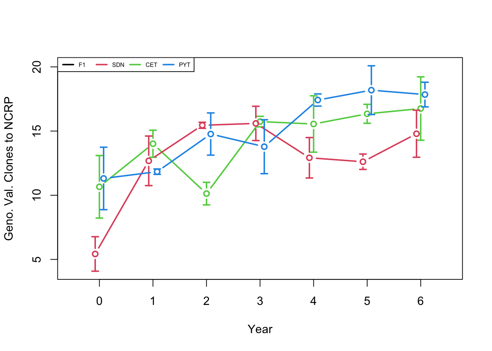
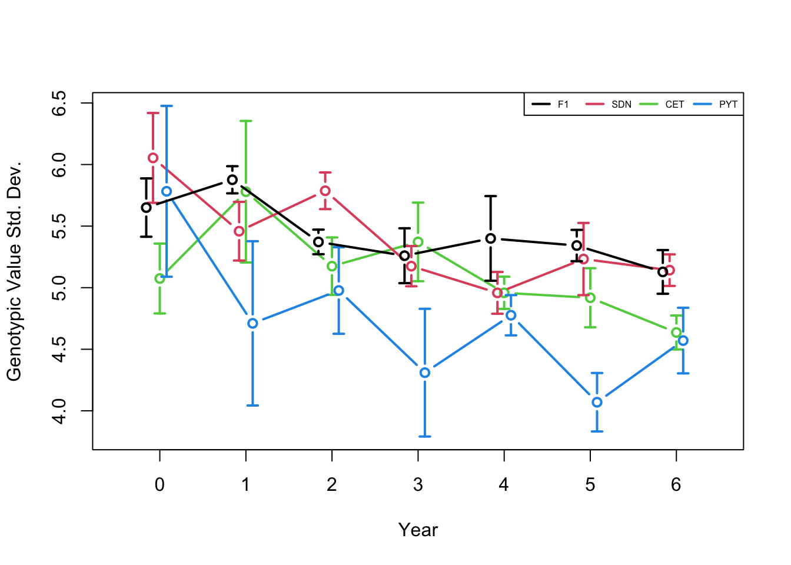

Last updated: 2021-04-22
Checks: 7 0
Knit directory: BreedingSchemeOptGroup/
This reproducible R Markdown analysis was created with workflowr (version 1.6.2). The Checks tab describes the reproducibility checks that were applied when the results were created. The Past versions tab lists the development history.
Great! Since the R Markdown file has been committed to the Git repository, you know the exact version of the code that produced these results.
Great job! The global environment was empty. Objects defined in the global environment can affect the analysis in your R Markdown file in unknown ways. For reproduciblity it’s best to always run the code in an empty environment.
The command set.seed(20210422) was run prior to running the code in the R Markdown file. Setting a seed ensures that any results that rely on randomness, e.g. subsampling or permutations, are reproducible.
Great job! Recording the operating system, R version, and package versions is critical for reproducibility.
Nice! There were no cached chunks for this analysis, so you can be confident that you successfully produced the results during this run.
Great job! Using relative paths to the files within your workflowr project makes it easier to run your code on other machines.
Great! You are using Git for version control. Tracking code development and connecting the code version to the results is critical for reproducibility.
The results in this page were generated with repository version 9df9d9b. See the Past versions tab to see a history of the changes made to the R Markdown and HTML files.
Note that you need to be careful to ensure that all relevant files for the analysis have been committed to Git prior to generating the results (you can use wflow_publish or wflow_git_commit). workflowr only checks the R Markdown file, but you know if there are other scripts or data files that it depends on. Below is the status of the Git repository when the results were generated:
Ignored files:
Ignored: .DS_Store
Ignored: .Rproj.user/
Ignored: data/.DS_Store
Untracked files:
Untracked: data/BaselineControlFile.txt
Untracked: data/BaselinePopulationFile.txt
Untracked: data/inst/
Unstaged changes:
Modified: README.md
Note that any generated files, e.g. HTML, png, CSS, etc., are not included in this status report because it is ok for generated content to have uncommitted changes.
These are the previous versions of the repository in which changes were made to the R Markdown (analysis/AlphaSimHlpR_firstSteps.Rmd) and HTML (docs/AlphaSimHlpR_firstSteps.html) files. If you’ve configured a remote Git repository (see ?wflow_git_remote), click on the hyperlinks in the table below to view the files as they were in that past version.
| File | Version | Author | Date | Message |
|---|---|---|---|---|
| Rmd | 9df9d9b | wolfemd | 2021-04-22 | Publish the initial files for the Breeding Scheme Optimization Group project |
R packages we will need. Install them if necessary.
install.packages(c("tidyverse","AlphaSimR","devtools"))Install AlphaSimHlpR
devtools::install_github("jeanlucj/AlphaSimHlpR", ref = 'master',
dependencies = T, force = T) # force = T to ensure I get a fresh installWhen prompted “Which would you like to update?” choose “1: All”.
library(AlphaSimHlpR)
# Get `Error: package ‘optiSel’ could not be loaded`??
install.packages("optiSel",dependencies = T)
library(AlphaSimHlpR)
# still error
library(optiSel)
# Error: package or namespace
# load failed for ‘optiSel’: .on
# Load failed in loadNamespace() for 'rgl',
# details: call: rgl.init(initValue, onlyNULL)
# error: OpenGL is not available in this buildFollowing is specific to my macOS install state
Google search of error leads to: https://stackoverflow.com/questions/9878693/error-in-loading-rgl-package-with-mac-os-x
Suggestion Solution: install XQuartz
brew install xquartzlibrary(AlphaSimHlpR)Finally I get a clean load!
browseVignettes("AlphaSimHlpR")The vignettes don’t show up… but their Rmd’s are in the GitHub Repo. Best guess: need to be added to the namespace or knit and the package master needs to be freshly built.
I downloaded the Rmd’s from GitHub here.
New R session. Follow the AlphaSimHlpR vignette.
I also had to download the inst folder and it’s example “control file” contents from GitHub here
# Make sure you have the right packages installed
neededPackages <- c("AlphaSimR", "dplyr", "tidyr", "plotrix",
"lme4", "sommer", "optiSel")
for (p in neededPackages) if (!require(p, character.only=T)) install.packages(p)Loading required package: AlphaSimRLoading required package: R6Loading required package: dplyr
Attaching package: 'dplyr'The following object is masked from 'package:AlphaSimR':
mutateThe following objects are masked from 'package:stats':
filter, lagThe following objects are masked from 'package:base':
intersect, setdiff, setequal, unionLoading required package: tidyrLoading required package: plotrixLoading required package: lme4Loading required package: Matrix
Attaching package: 'Matrix'The following objects are masked from 'package:tidyr':
expand, pack, unpackLoading required package: sommerLoading required package: MASS
Attaching package: 'MASS'The following object is masked from 'package:dplyr':
selectLoading required package: latticeLoading required package: crayonLoading required package: optiSelWarning in rgl.init(initValue, onlyNULL): RGL: unable to open X11 displayWarning: 'rgl.init' failed, running with 'rgl.useNULL = TRUE'.suppressMessages(library(AlphaSimHlpR))Define the genetic architecture of the population and other breeding scheme parameters in a list bsp.
bsp <- specifyPopulation(ctrlFileName="data/inst/PopulationCtrlFile_Small.txt")
bsp <- specifyPipeline(bsp, ctrlFileName="data/inst/ControlFile_Small.txt")
bsp <- specifyCosts(bsp, ctrlFileName="data/inst/CostsCtrlFile_Small.txt")
nReplications <- 3
bsp$nCyclesToRun <- 6
print(bsp)$nChr
[1] 3
$effPopSize
[1] 100
$quickHaplo
[1] TRUE
$segSites
[1] 400
$nQTL
[1] 40
$nSNP
[1] 100
$genVar
[1] 40
$gxeVar
numeric(0)
$gxyVar
[1] 15
$gxlVar
[1] 10
$gxyxlVar
[1] 5
$meanDD
[1] 0.8
$varDD
[1] 0.01
$relAA
[1] 0.5
$nStages
[1] 3
$stageNames
[1] "SDN" "CET" "PYT"
$stageToGenotype
[1] "CET"
$trainingPopCycles
F1 SDN CET PYT
0 3 3 2
$nParents
[1] 15
$nCrosses
[1] 30
$nProgeny
[1] 10
$usePolycrossNursery
[1] FALSE
$nSeeds
[1] 300
$useOptContrib
[1] FALSE
$nCandOptCont
[1] 200
$targetEffPopSize
[1] 20
$nEntries
SDN CET PYT
200 75 20
$nReps
SDN CET PYT
1 1 2
$nLocs
SDN CET PYT
1 2 2
$nClonesToNCRP
[1] 3
$nChks
SDN CET PYT
5 4 2
$entryToChkRatio
SDN CET PYT
50 25 20
$errVars
SDN CET PYT
200 100 70
$phenoF1toStage1
[1] TRUE
$errVarPreStage1
[1] 500
$useCurrentPhenoTrain
[1] FALSE
$nCyclesToKeepRecords
[1] 4
$nCyclesToRun
[1] 6
$selCritPipeAdv
function (records, candidates, bsp, SP)
{
phenoDF <- framePhenoRec(records, bsp)
if (!any(candidates %in% phenoDF$id)) {
crit <- runif(length(candidates))
}
else {
crit <- iidPhenoEval(phenoDF)
crit <- crit[candidates]
}
names(crit) <- candidates
return(crit)
}
<bytecode: 0x7fd0b71f4ac8>
<environment: namespace:AlphaSimHlpR>
$selCritPopImprov
function (records, candidates, bsp, SP)
{
phenoDF <- framePhenoRec(records, bsp)
if (!any(candidates %in% phenoDF$id)) {
crit <- runif(length(candidates))
}
else {
crit <- iidPhenoEval(phenoDF)
crit <- crit[candidates]
}
names(crit) <- candidates
return(crit)
}
<bytecode: 0x7fd0b71f4ac8>
<environment: namespace:AlphaSimHlpR>
$analyzeInbreeding
[1] 0
$chkReps
SDN CET PYT
1 1 1
$checks
NULL
$plotCosts
SDN CET PYT
1 8 14
$perLocationCost
[1] 1000
$crossingCost
[1] 0.2
$qcGenoCost
[1] 1.5
$wholeGenomeCost
[1] 10
$develCosts
[1] 60
$genotypingCosts
CET
862.5
$trialCosts
[,1]
[1,] 2645
$locationCosts
[1] 2000
$totalCosts
[,1]
[1,] 5567.5Run a simple breeding scheme for 6 cycles
Replicate a very simple breeding program 3 times.
replicRecords <- lapply(1:nReplications, runBreedingScheme,
nCycles=bsp$nCyclesToRun,
initializeFunc=initFuncADChk,
productPipeline=prodPipeFncChk,
populationImprovement=popImprov1Cyc, bsp)****** 1
[1] "initFuncADChk deprecated. Please use initializeScheme"
1 [1] "prodPipeFncChk deprecated. Please use productPipeline"
2 [1] "prodPipeFncChk deprecated. Please use productPipeline"
3 [1] "prodPipeFncChk deprecated. Please use productPipeline"
4 [1] "prodPipeFncChk deprecated. Please use productPipeline"
5 [1] "prodPipeFncChk deprecated. Please use productPipeline"
6 [1] "prodPipeFncChk deprecated. Please use productPipeline"
****** 2
[1] "initFuncADChk deprecated. Please use initializeScheme"
1 [1] "prodPipeFncChk deprecated. Please use productPipeline"
2 [1] "prodPipeFncChk deprecated. Please use productPipeline"
3 [1] "prodPipeFncChk deprecated. Please use productPipeline"
4 [1] "prodPipeFncChk deprecated. Please use productPipeline"
5 [1] "prodPipeFncChk deprecated. Please use productPipeline"
6 [1] "prodPipeFncChk deprecated. Please use productPipeline"
****** 3
[1] "initFuncADChk deprecated. Please use initializeScheme"
1 [1] "prodPipeFncChk deprecated. Please use productPipeline"
2 [1] "prodPipeFncChk deprecated. Please use productPipeline"
3 [1] "prodPipeFncChk deprecated. Please use productPipeline"
4 [1] "prodPipeFncChk deprecated. Please use productPipeline"
5 [1] "prodPipeFncChk deprecated. Please use productPipeline"
6 [1] "prodPipeFncChk deprecated. Please use productPipeline"Calculate the means of the breeding programs and plot them out
plotData <- plotRecords(replicRecords)
meanMeans <- tapply(plotData$genValMean, list(plotData$year, plotData$stage), mean)
meanMeans <- meanMeans[,c("F1", bsp$stageNames)]
stdErrMeans <- tapply(plotData$genValMean, list(plotData$year, plotData$stage), std.error)
stdErrMeans <- stdErrMeans[,c("F1", bsp$stageNames)]
print(meanMeans) F1 SDN CET PYT
0 4.884124 3.719726 4.459117 5.992662
1 6.993365 6.040825 5.776279 8.348509
2 8.151032 7.705864 7.850151 9.413862
3 8.774025 8.939957 9.735685 11.019171
4 10.214759 9.632609 10.806788 12.763704
5 11.676611 10.816320 11.177347 14.040778
6 12.409212 12.361436 12.745762 14.584065print(stdErrMeans) F1 SDN CET PYT
0 0.1149940 0.2880178 0.51996148 0.56538833
1 0.6021817 0.1578891 0.41483506 0.26419922
2 0.4611349 0.4427966 0.09911811 0.04757649
3 1.2025796 0.4219375 0.26979001 0.98601057
4 1.0475610 1.2193721 0.24522642 1.16266465
5 0.7402013 0.9328822 1.51289357 0.50244206
6 0.9863010 0.7740142 0.89443847 1.00791981Run a simple example simulation of the effect of reducing error with new tools.
sessionInfo()R version 4.0.3 (2020-10-10)
Platform: x86_64-apple-darwin17.0 (64-bit)
Running under: macOS Big Sur 10.16
Matrix products: default
BLAS: /Library/Frameworks/R.framework/Versions/4.0/Resources/lib/libRblas.dylib
LAPACK: /Library/Frameworks/R.framework/Versions/4.0/Resources/lib/libRlapack.dylib
locale:
[1] en_US.UTF-8/en_US.UTF-8/en_US.UTF-8/C/en_US.UTF-8/en_US.UTF-8
attached base packages:
[1] parallel stats graphics grDevices utils datasets methods
[8] base
other attached packages:
[1] AlphaSimHlpR_0.2.0 MCMCpack_1.5-0 coda_0.19-4 optiSel_2.0.5
[5] sommer_4.1.3 crayon_1.4.1 lattice_0.20-41 MASS_7.3-53.1
[9] lme4_1.1-26 Matrix_1.3-2 plotrix_3.8-1 tidyr_1.1.3
[13] dplyr_1.0.5 AlphaSimR_0.13.0 R6_2.5.0 workflowr_1.6.2
loaded via a namespace (and not attached):
[1] mcmc_0.9-7 nlme_3.1-152 matrixStats_0.58.0
[4] fs_1.5.0 kinship2_1.8.5 doParallel_1.0.16
[7] webshot_0.5.2 rprojroot_2.0.2 numDeriv_2016.8-1.1
[10] tools_4.0.3 bslib_0.2.4 utf8_1.2.1
[13] DBI_1.1.1 manipulateWidget_0.10.1 tidyselect_1.1.0
[16] compiler_4.0.3 git2r_0.28.0 quantreg_5.85
[19] pspline_1.0-18 SparseM_1.81 alabama_2015.3-1
[22] cccp_0.2-7 sass_0.3.1 quadprog_1.5-8
[25] pkgdown_1.6.1 stringr_1.4.0 digest_0.6.27
[28] minqa_1.2.4 rmarkdown_2.7 pkgconfig_2.0.3
[31] htmltools_0.5.1.1 highr_0.9 fastmap_1.1.0
[34] htmlwidgets_1.5.3 rlang_0.4.10 shiny_1.6.0
[37] jquerylib_0.1.3 generics_0.1.0 jsonlite_1.7.2
[40] crosstalk_1.1.1 magrittr_2.0.1 ECOSolveR_0.5.4
[43] Rcpp_1.0.6 fansi_0.4.2 abind_1.4-5
[46] lifecycle_1.0.0 scatterplot3d_0.3-41 stringi_1.5.3
[49] whisker_0.4 yaml_2.2.1 plyr_1.8.6
[52] grid_4.0.3 promises_1.2.0.1 miniUI_0.1.1.1
[55] splines_4.0.3 nadiv_2.17.1 knitr_1.32
[58] pillar_1.6.0 boot_1.3-27 reshape2_1.4.4
[61] codetools_0.2-18 magic_1.5-9 glue_1.4.2
[64] evaluate_0.14 HaploSim_1.8.4 data.table_1.14.0
[67] vctrs_0.3.7 nloptr_1.2.2.2 httpuv_1.5.5
[70] optiSolve_0.1.2 foreach_1.5.1 MatrixModels_0.5-0
[73] purrr_0.3.4 assertthat_0.2.1 cachem_1.0.4
[76] xfun_0.22 mime_0.10 xtable_1.8-4
[79] pedigree_1.4 later_1.1.0.1 conquer_1.0.2
[82] minpack.lm_1.2-1 tibble_3.1.1 iterators_1.0.13
[85] memoise_2.0.0 shapes_1.2.6 rgl_0.106.6
[88] statmod_1.4.35 ellipsis_0.3.1